산업
앱으로 모은 개인 투자자 2만2,000명, 공장 지붕 태양광 7,000곳에 4,000억 원 넘게 넣어
에이치에너지 '모햇', 투자금으로 협동조합 세워 공장 지붕에 발전소…기업은 싼 전기, 투자자는 판매 수익 배당
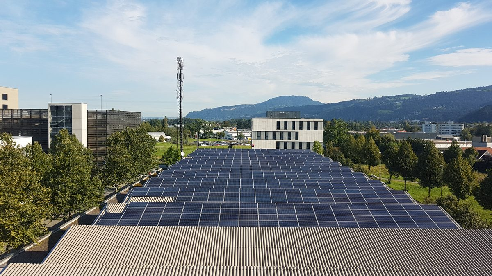
새만금 수상태양광 300MW 재공모 응찰 0곳으로 유찰…직접 PPA 수요처 확보·공용시설 분담금 1,386억 원이 걸림돌
첫 공모엔 1개 업체만, 30MW 사업도 유찰돼 13일까지 재공모…"조건 완화·수요처 확보 시간 줘야" 지적
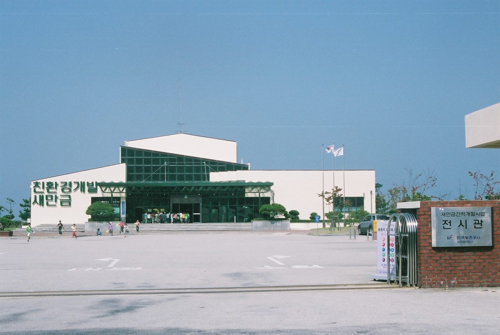

한국서부발전, 국가기술표준원 청사 주차장·옥상에 태양광 추진…연 1,614MWh 생산 예상
5일 업무협약…산책로 등 쓰임 적던 청사 부지 활용, 서부발전이 부지 적합성 검토·단계별 사업계획 맡아…설비 용량·사업비·수익 쓰임새는 안 밝혀
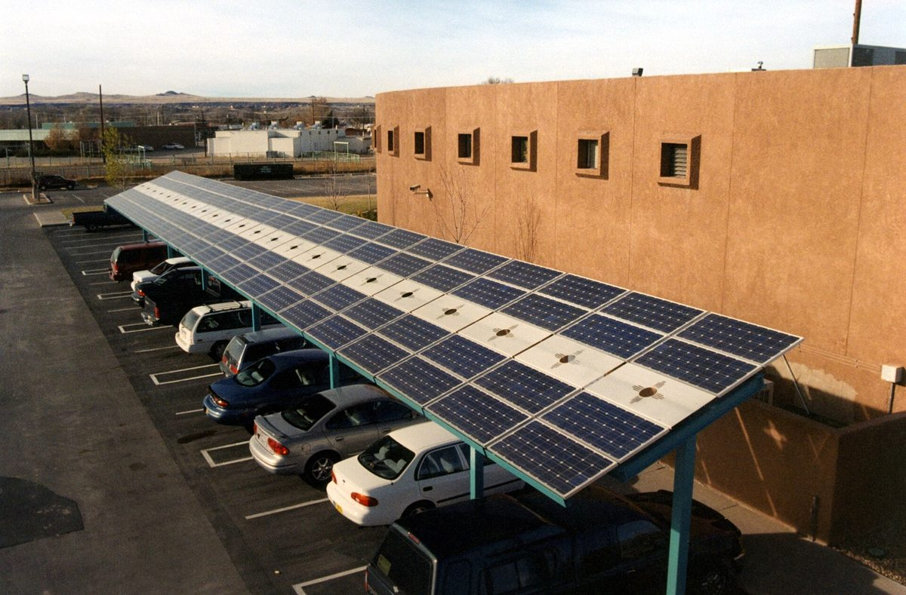
주주 1,700명의 독일 시민 태양광 기업 솔라콤플렉스, 태양광+배터리 묶어 5년 고정가 계약
텡엔 인근 4.5MW 태양광·7.2MWh 배터리…낮은 전력가격 시대의 판로 찾기

남부발전·부산항만공사, 부산항 항만부지 육상풍력 공동개발 협약…해상풍력·태양광·ESS로 넓힐 계획
남부발전은 기술·재무 타당성 조사, 항만공사는 부지 제공·계통 연계 맡아…발전 용량·사업비·위치·일정은 아직 공개 안 돼

현대제철 당진제철소 주차장 두 곳에 태양광 3.27MW 가동…환경단체는 재생에너지 대폭 확대 주문
61억 원 들여 특수목적법인이 설치·운영하고 현대제철이 빌려 쓰는 설비임대 방식, 연 1,736톤 감축 예상…충남환경운동연합 '필요 전력에 비하면 시작 단계'

새만금 산단 RE100용 30MW 태양광, 첫 공모에 1개 컨소시엄만…새만금개발공사 13일까지 재공모
공유수면 약 44만㎡에 463억 원 들여 짓고 준공 뒤 20년 운영, 국가산단 5·6공구 입주기업과 직접전력거래(PPA)…첫 공모 참여가 저조했던 구체적 이유는 확인 안 돼

1990년 조성 부산 신평장림산단에 태양광 12.253MW·ESS 5MWh…남부발전 컨소시엄, 2029년까지 320억 원 투입 협약
입주기업 지붕·공공 유휴부지 활용, 정부출연금 200억·지방비 30억·컨소시엄 90억 원…운영 수익은 재투자하고 부산시와 만든 '햇빛소득' 모델 적용 방침, 지역 몫은 아직 안 나와
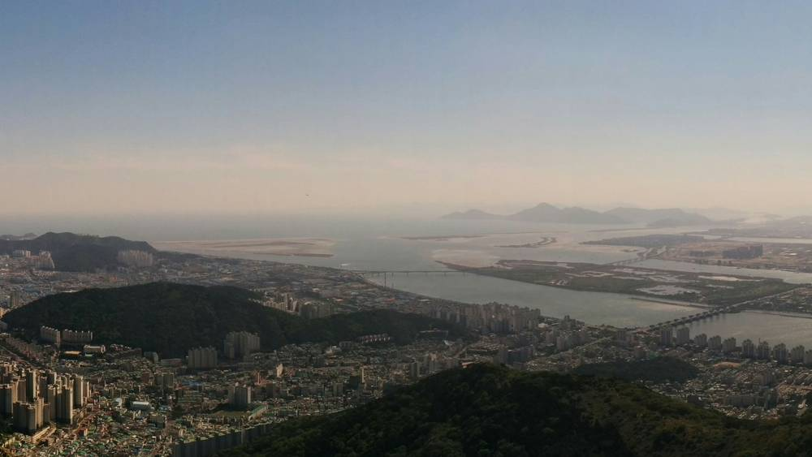
서울교통공사, 진접차량기지 옥상·주차장 4곳에 733.83kW 태양광 설치해 직접 사용…연 1억7,700만 원 절감 예상
부지를 민간에 빌려주던 방식 대신 공사가 생산 전력을 직접 쓰는 첫 차량기지 사례…연 83만5,000kWh 발전·온실가스 384톤 감축 예상, 시민 출자 없는 공공기관 직영 자가용 설비
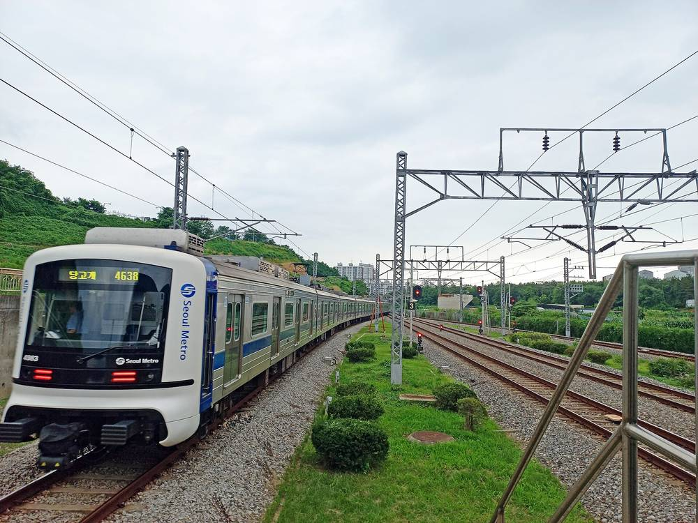
보성농협 조합장, 영농형 태양광 걸림돌로 담보 대출·고령 주민 자부담 꼽아…농협이 자부담 맡는 방식 언급
농협이 7년 전 설치한 벼농사 영농형 태양광 현장…선로 확보·햇빛마을 금융지원·규제 개선이 과제로
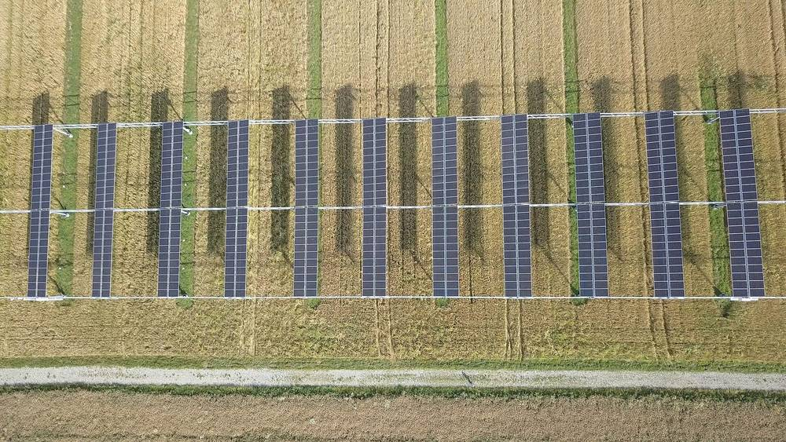
마이크로소프트, 한국 반도체 공급업체에 한국 안에서 무탄소 전력 조달 요구
브룩필드 한 곳과 10.5GW 등 전 세계 재생에너지 설비 40GW 계약…한국 재생에너지 발전 비중은 10% 안팎으로 세계 평균의 3분의 1에도 못 미쳐
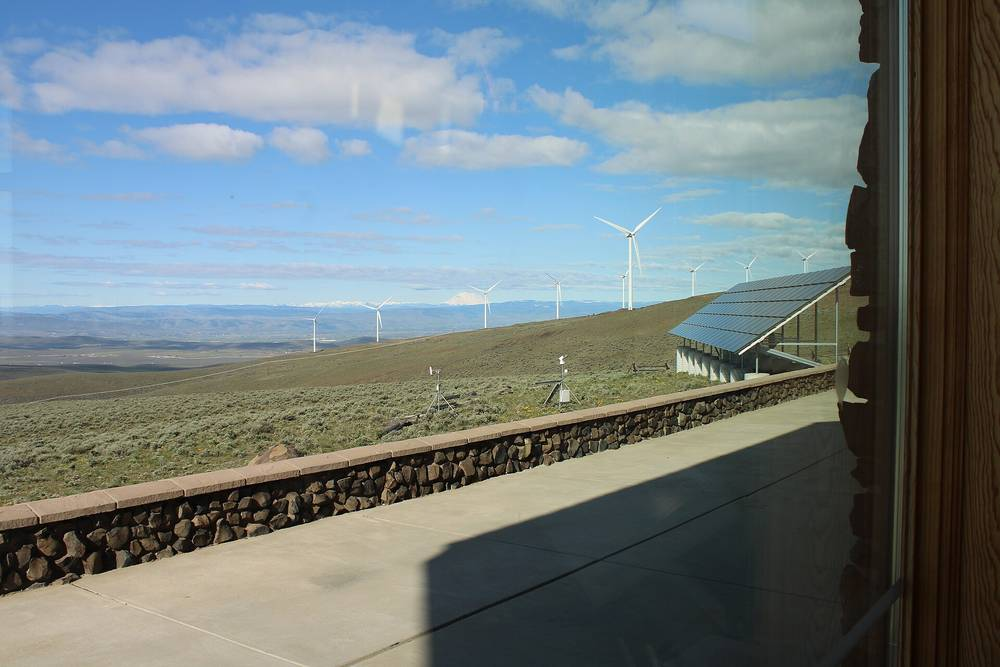
내년 RPS 대신할 재생에너지 새 계약시장, 해상풍력 투자·주민참여 사업 수익성 쟁점…REC 가중치 역할 이어받을지가 관건
정부가 발전원별 물량·상한가격 제시 뒤 경쟁입찰·한전 장기 고정가격 계약…해상풍력 단가 kWh당 330원대에서 2035년 150원 이하 목표, 업계는 먼바다 비용 반영 요구
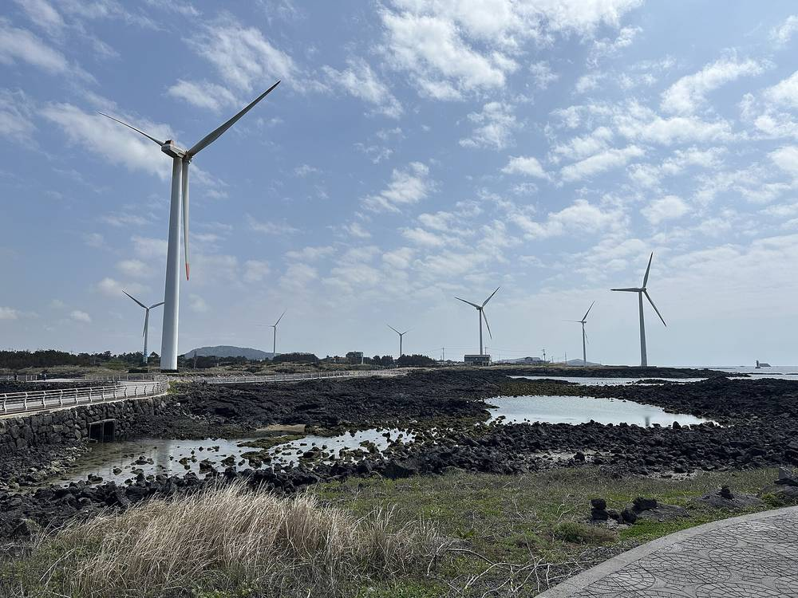
햇빛소득마을은 늘리는데 주민참여 REC 가중치는 내년 종료…우대가격 수준은 아직 미정
정부 목표 올해 700곳·2030년 3천곳 이상…전남광주 125곳 선정, 경과 규정으로 일부는 새 제도 밖
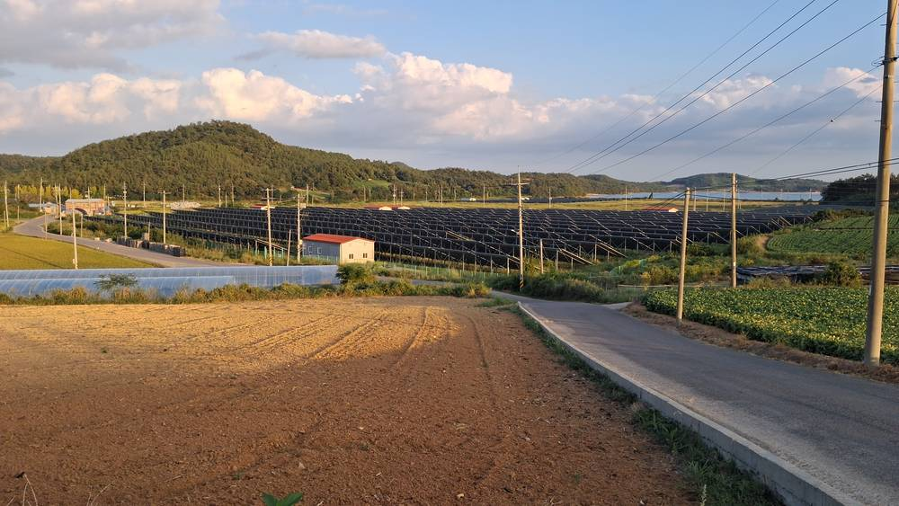
서부발전, 대전 산업단지 공장 지붕에 태양광 13MW 이상…20년 운영하며 수익 일부 지역 환원
산단 에너지자급자족 사업 협약, 입주기업 20곳 이상 고효율 설비 교체 지원…군산 산단 11.69MW에 이어 두 번째
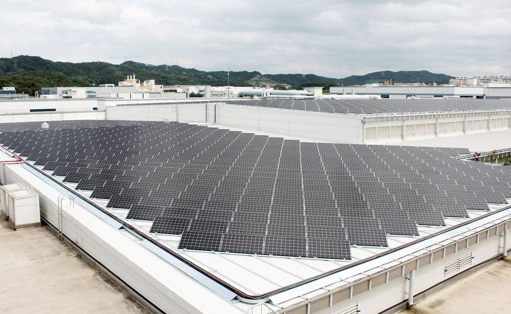
전남도, 내부 검토서 영농형 수익 40% 감소 예상하고도 해남 부동지구 1GW 태양광 추진
사업비 1조7,840억 원, 솔라시도 산단·데이터센터 전력 공급 구상…농지 사용 승인 3년 넘도록 방식·사업자 못 정해
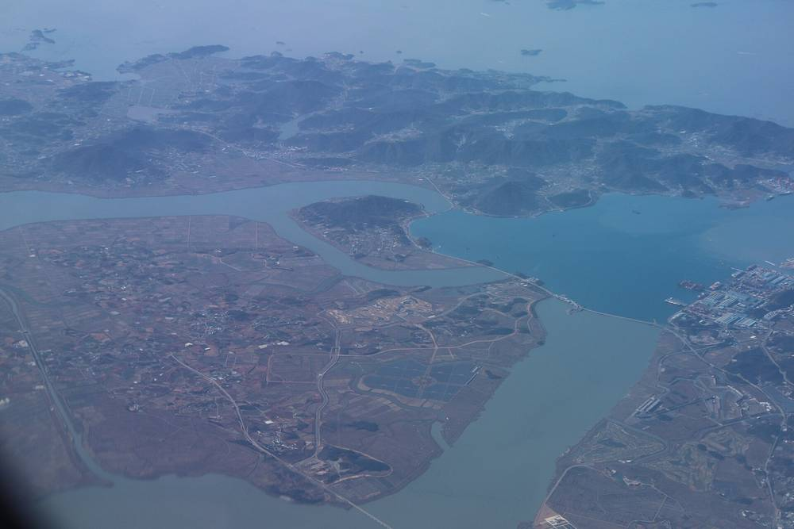
영농형 태양광 농가 예상 순수익, 1년 새 999만 원에서 624만 원으로…37% 낮아져
100kW 기준 농식품부·영농형태양광협회 추정…발전 매출 2,256만 원→1,950만 원, 설치비 1억5,500만 원→1억7,000만 원, 12월 특별법 시행 앞둬
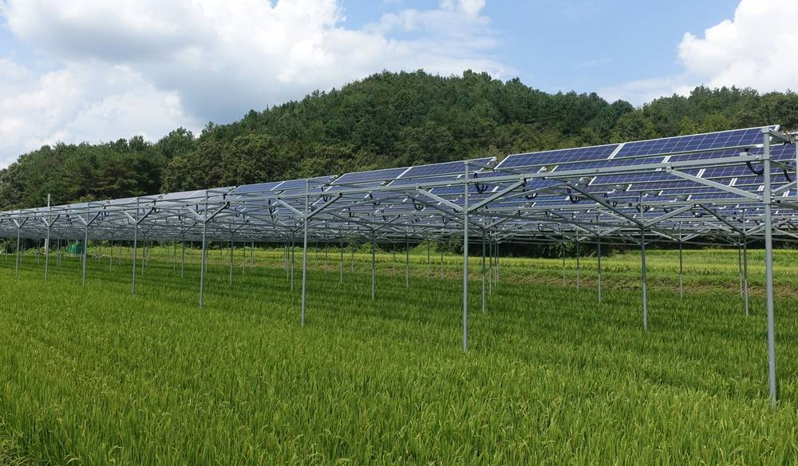
産業
アプリで集めた個人投資家2万2,000人、工場屋根の太陽光7,000カ所に4,000億ウォン超を投資
エイチエナジー「モヘッ」、投資金で協同組合を設立し工場屋根に発電所…企業は安い電気、投資家は売電収益の配当
セマングム水上太陽光300MW、再公募の応札ゼロで不成立…直接PPAの需要先確保と共用施設負担金1,386億ウォンが壁に
初回公募は1社のみ、30MW事業も不成立で13日まで再公募…「条件緩和と需要先確保の時間が必要」との指摘
韓国西部発電、国家技術標準院庁舎の駐車場・屋上に太陽光を推進…年1,614MWhの発電を見込む
5日に業務協約…遊歩道など利用の少なかった庁舎敷地を活用、西部発電が敷地の適合性検討・段階別事業計画を担当…設備容量・事業費・収益の使い道は明らかにせず
韓国南部発電・釜山港湾公社、釜山港の港湾用地で陸上風力の共同開発協約…洋上風力・太陽光・ESSへ広げる計画
南部発電は技術・財務面の事業性調査、港湾公社は用地提供と系統連系を担当…発電容量・事業費・位置・日程はまだ公表されず
現代製鉄唐津製鉄所、駐車場2カ所に太陽光3.27MWが稼働…環境団体は再生可能エネルギーの大幅拡大を求める
61億ウォンを投じ特別目的法人が設置・運営し現代製鉄が借りて使う設備リース方式、年1,736トンの削減見込み…忠南環境運動連合「必要電力に比べれば始まりの段階」
セマングム産業団地のRE100向け30MW太陽光、初回公募に応じたのは1コンソーシアムのみ…セマングム開発公社が13日まで再公募
公有水面約44万㎡に463億ウォンを投じて建設し完工後20年運営、国家産業団地5・6工区の入居企業と電力直接取引（PPA）…初回公募の参加が低調だった具体的な理由は不明
1990年造成の釜山・新平長林産業団地に太陽光12.253MW・ESS 5MWh…南部発電コンソーシアム、2029年までに320億ウォン投入で協約
入居企業の屋根と公共の遊休地を活用、政府出捐金200億・地方費30億・コンソーシアム90億ウォン…運営収益は再投資し、釜山市と作った「ヘッビッ所得」モデルを適用する方針、地域の取り分はまだ示されず
ソウル交通公社、榛接車両基地の屋上・駐車場4か所に733.83kWの太陽光を設置し自家消費…年1億7,700万ウォンの節減見込み
敷地を民間に貸していた方式に代わり、公社が発電した電力を直接使う初の車両基地の事例…年83万5,000kWhを発電し温室効果ガス384トンを削減する見込み、市民出資のない公共機関直営の自家用設備
宝城農協の組合長、営農型太陽光の壁に担保融資と高齢住民の自己負担を挙げる…農協が自己負担を担う方式に言及
農協が7年前に設置した稲作の営農型太陽光の現場…送電線の確保、太陽光村への金融支援、規制改善が課題に
マイクロソフト、韓国の半導体サプライヤーに韓国国内でのカーボンフリー電力調達を要求
ブルックフィールド1社と10.5GWなど世界で再エネ設備40GWを契約…韓国の再エネ発電比率は10％前後で世界平均の3分の1にも届かず
来年RPSに代わる再エネの新契約市場、洋上風力投資と住民参加事業の収益性が争点…REC加重値の役割を引き継げるかが鍵
政府が電源別の導入量と上限価格を示した後に競争入札・韓電と長期固定価格契約…洋上風力の発電単価を1kWh当たり330ウォン台から2035年150ウォン以下に下げる目標、業界は遠い海のコスト反映を求める
太陽光所得村は増やすのに住民参加のREC加重値は来年終了…優遇価格の水準はまだ未定
政府目標は今年700カ所・2030年に3,000カ所以上…全南光州は125カ所を選定、経過規定で一部は新制度の対象外
西部発電、大田の産業団地の工場屋根に太陽光13MW以上…20年運営し収益の一部を地域に還元
産業団地エネルギー自給自足事業で協約、入居企業20社以上の高効率設備への更新を支援…群山産業団地11.69MWに続き2カ所目
全羅南道、内部検討で営農型の収益40％減を予想しながら海南・富洞地区1GW太陽光を推進
事業費1兆7,840億ウォン、ソラシド産業団地・データセンターへの電力供給を構想…農地使用承認から3年を過ぎても方式・事業者は未定
営農型太陽光の農家予想純収益、1年で999万ウォンから624万ウォンへ…37％低下
100kW基準で農林畜産食品部・営農型太陽光協会が推計…発電売上2,256万ウォン→1,950万ウォン、設置費1億5,500万ウォン→1億7,000万ウォン、12月の特別法施行を控え
产业
通过应用程序募集的2万2,000名个人投资者，向7,000处工厂屋顶太阳能投入逾4,000亿韩元
H Energy"Mohaet"用投资款成立合作社在工厂屋顶建电站…企业用上便宜电力，投资者获得售电收益分红
新万金300MW水上光伏再次招标无人投标流标…直接PPA需求方和1,386亿韩元公共设施分摊费成障碍
首次招标仅1家企业参与，30MW项目也流标、13日前重新招标…有意见认为"应放宽条件、给予确保需求方的时间"
韩国西部发电推进在国家技术标准院办公区停车场和屋顶建设光伏…预计年发电1,614MWh
5日签署业务协议…利用步道等此前少有用途的办公区土地，西部发电负责场地适合性评估和分阶段项目计划…装机容量、项目费用和收益用途未公布
韩国南部发电与釜山港湾公社签署釜山港港区用地陆上风电共同开发协议…计划扩展至海上风电、太阳能和储能
南部发电负责技术与财务可行性研究，港湾公社负责提供用地和电网接入…装机容量、投资额、位置和时间表尚未公布
现代制铁唐津钢厂两处停车场3.27MW光伏投运…环保团体呼吁大幅扩大可再生能源
投资61亿韩元，由特殊目的法人建设运营、现代制铁租用的设备租赁模式，预计年减排1,736吨…忠南环境运动联合称"与所需电力相比只是起步"
新万金产业园区RE100用30MW光伏项目首次招标仅1个联合体参与…新万金开发公社13日前重新招标
在约44万平方米公有水面投资463亿韩元建设、竣工后运营20年，与国家产业园区5·6工区入驻企业签订直购电协议（PPA）…首次招标参与冷清的具体原因尚未查明
1990年建成的釜山新平长林产业园区将建12.253MW太阳能和5MWh储能…南部发电联合体签约，至2029年投入320亿韩元
利用入驻企业屋顶和公共闲置用地，政府出资200亿、地方财政30亿、联合体90亿韩元…运营收益将再投资，并适用与釜山市共同制定的"阳光收入"模式，地方所得份额尚未公布
首尔交通公社在榛接车辆基地屋顶和停车场4处安装733.83kW光伏并自发自用…预计每年节省1.77亿韩元
不再把场地租给民间，而由公社直接使用所发电力，为其车辆基地首例…预计年发电83.5万kWh、减排温室气体384吨，属无市民出资的公共机构直营自用设施
明年取代RPS的可再生能源新合同市场引发海上风电投资与居民参与项目收益争议，关键在于能否接替REC权重的作用
政府公布各电源装机量和上限价格后进行竞争招标，中标者与韩电签订长期固定价格合同…目标将海上风电成本从每kWh 330韩元级降至2035年150韩元以下，业界要求反映远海成本
西部发电在大田产业园区工厂屋顶建设13MW以上太阳能，运营20年并将部分收益回馈地方
签署产业园区能源自给自足项目协议，支持20多家入驻企业更换高效设备；继群山产业园区11.69MW之后的第二个项目
韩国农光互补农户预期净收益一年内从999万韩元降至624万韩元，降幅37%
农林畜产食品部与农光互补协会按100kW估算，发电收入2,256万韩元降至1,950万韩元，安装费由1.55亿韩元升至1.7亿韩元，特别法将于12月施行
Industry
22,000 Retail Investors Recruited by App Have Put Over 400 Billion Won into Solar on 7,000 Factory Roofs
H Energy's 'Mohaet' sets up a cooperative with investors' money to build plants on factory roofs; firms get cheaper power and investors get dividends from sales
Saemangeum 300MW Floating Solar Fails Again as Rebid Draws No Bidders; Finding Direct PPA Buyers and 138.6 Billion Won in Shared Facility Charges Seen as Hurdles
Only one company joined the first round, and a separate 30MW project also failed and is being re-tendered until the 13th; calls grow to ease terms and give bidders time to secure buyers
Incheon's Geomdan 2 Industrial Park Mandates Rooftop Solar for Tenants From Planning Stage, Offers Roof Leasing and Low-Cost Power
Incheon Urban & Housing Corporation designs support to lower the RE100 hurdle for the 770,000㎡ park
Korea Western Power to build solar on car parks and rooftops at Korean Agency for Technology and Standards; 1,614MWh a year expected
Agreement signed on the 5th to use little-used land on the agency's premises including walking paths; KOWEPO to assess site suitability and draw up phased plans; capacity, cost and use of revenue not disclosed
Leek Entrepreneurs in the Netherlands Launch Energy Cooperative to Tackle Grid Limits
Energy storage and shared charging square under consideration... size, capital and membership not disclosed
German Citizen Solar Company Solarcomplex, Owned by 1,700 Shareholders, Signs 5-Year Fixed-Price Deal for Solar Plus Battery
4.5MW solar and 7.2MWh battery near Tengen... finding a market in an era of low power prices
3,899.68kWp of Solar Approved for Two Saemangeum Industrial Park Tenants
Power to be supplied to Solvay Silica Korea and Eco&Dream under on-site PPAs, with installation due to finish by the end of this year
KOSPO and Busan Port Authority agree to jointly develop onshore wind on port land, with plans to expand into offshore wind, solar and storage
KOSPO will run a technical and financial feasibility study while the port authority provides land and grid connection; capacity, cost, location and timetable have not been disclosed
Hyundai Steel starts 3.27MW of solar at two parking lots of its Dangjin steelworks; environmental group calls for far larger renewable build-out
KRW 6.1 billion leasing model in which a special purpose company builds and runs the arrays and Hyundai Steel rents them, with 1,736 tonnes of annual cuts expected; South Chungcheong environmental group says it is only a first step against the power needed
Only one consortium bids for 30 MW RE100 solar project at Saemangeum industrial complex; developer reopens tender until 13 November
Plant on about 440,000 square metres of public waters would cost some 46.3 billion won and run for 20 years after completion, selling power to tenant firms in zones 5 and 6 through direct PPAs; the specific reason for the weak first round has not been confirmed
Busan's 1990-built Sinpyeong-Jangnim industrial complex to get 12.253MW of solar and 5MWh of storage as KOSPO consortium signs 32 billion won deal running to 2029
Rooftops of tenant firms and idle public land to be used, funded by 20 billion won in government grants, 3 billion won in local funds and 9 billion won from the consortium; operating income to be reinvested and shared under a "sunlight income" model made with Busan city, but the local share has not been spelled out
Seoul Metro installs 733.83kW of solar on four rooftops and parking areas at Jinjeop depot for its own use, expects to save 177 million won a year
Instead of leasing sites to private firms, it is the operator's first depot to use the power it generates directly; it expects 835,000kWh a year and a 384-tonne cut in greenhouse gases, from a publicly owned self-consumption system with no citizen investment
Boseong co-op head cites collateral and elderly residents' upfront costs as barriers to agrivoltaics, floats the co-op covering their share
At a rice-paddy agrivoltaic plant the agricultural cooperative installed seven years ago, grid lines, financing for solar villages and deregulation are named as tasks
Microsoft asks Korean chip suppliers to source carbon-free power within Korea
The company has contracted 40 GW of renewable capacity worldwide, including 10.5 GW with Brookfield alone, while renewables supply only around 10% of Korea's electricity, less than a third of the global average
Korea's new renewable contract market replacing the RPS next year puts offshore wind investment and resident-participation returns in question, with much riding on whether it takes over the role of REC multipliers
Government will set volumes and price caps by technology, followed by competitive auctions and long-term fixed-price contracts with KEPCO; target to cut offshore wind costs from around 330 won per kWh to below 150 won by 2035, while industry wants far-offshore costs reflected
Korea expands Sunlight Income Villages but ends REC weighting for resident investment next year, with preferential price still undecided
Government targets 700 villages this year and over 3,000 by 2030; 125 selected in Jeonnam-Gwangju, some exempt under transition rules
Korea Western Power to put 13MW-plus of solar on Daejeon industrial park roofs, returning part of 20 years of revenue locally
Industrial park energy self-sufficiency agreement also supports efficiency upgrades at 20-plus tenant firms; second such project after 11.69MW at Gunsan
South Jeolla pushes 1 GW solar project on Haenam's Budong reclaimed land despite internal review projecting 40% lower agrivoltaic returns
1.784 trillion won project would supply Solaseado industrial complex and data centers, but more than three years after farmland-use approval the model and developer remain undecided
Expected net income for Korean agrivoltaic farms falls 37% in a year, from 9.99 million to 6.24 million won
Agriculture ministry and agrivoltaics association estimate for 100 kW: generation revenue down from 22.56 million to 19.5 million won, installation cost up from 155 million to 170 million won, as special act takes effect in December